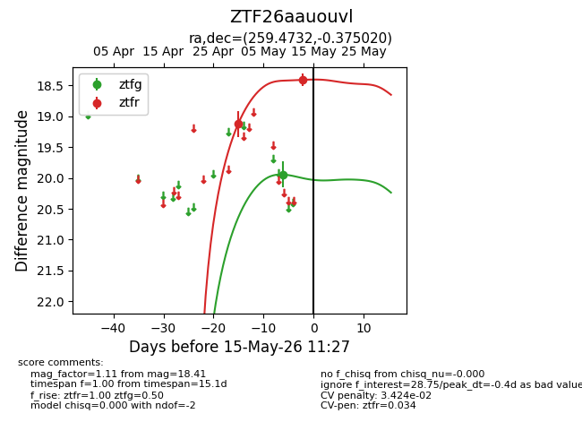
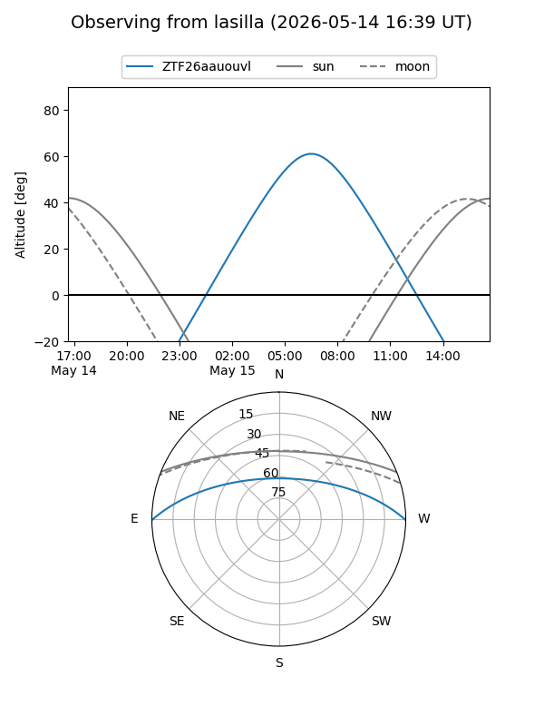
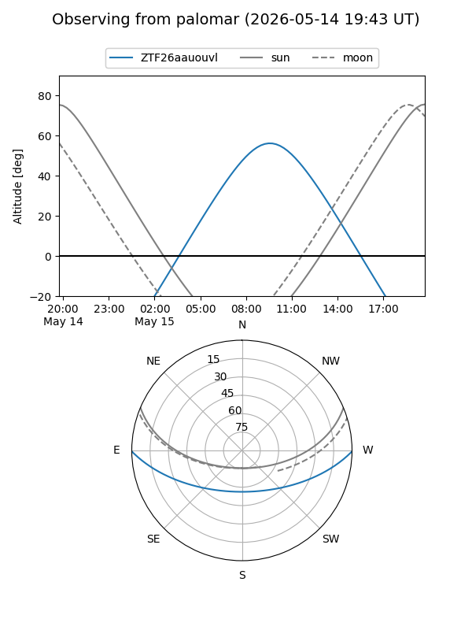
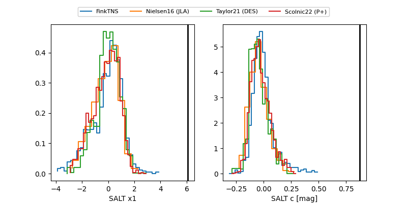

ZTF26aauouvl
Target ZTF26aauouvl at 2026-05-15 11:29
Aliases and brokers:
FINK: link
Lasair: link
ALeRCE: link
alt names
ZTF26aauouvl (ztf,fink_ztf)
Coordinates:
equatorial (ra, dec) = 259.4732,-0.37502
equatorial (HMS+DMS) = 17:17:53.57,-00:22:30.07
galactic (l, b) = (21.4272,+20.50378)
Flags:
likely cv
Photometry:
last ztfg=19.94, ztfr=18.41
1 ztfg, 2 ztfr detections
Lightcurve

Visibility


Additional plots
